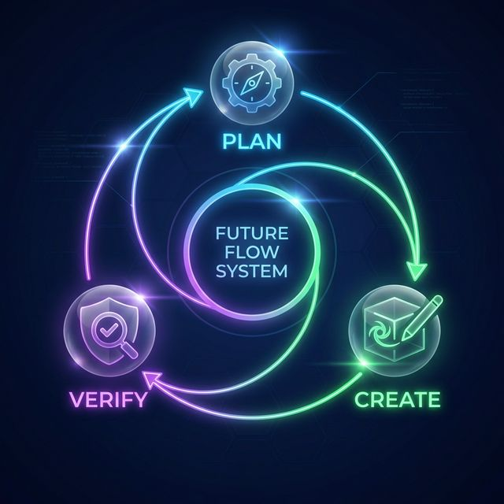

〜自律型AIがビジネスの可能性を広げる〜
専門スキルの開放

「技術」ではなく「創造性」で勝負する時代
AIが担う実務
実装・エラー修正・技術検証
人間が担う付加価値
課題発見・意思決定・ディレクション
「AIと共に、新しいビジネスを創造しましょう」
Gemini Pro /
Claude Sonnet 等
（トップクラスの賢いモデル）
💼 熟練の「チーフエンジニア」
「どう作れば良いか」から相談できる高い知力を持っています。アプリ全体の設計図を描いたり、原因不明の複雑なエラーを推理して解決するなど、高度な思考が求められる場面で頼りになります。
高速・軽量なモデル
（小回りの利くモデル）
🏃♂️ 仕事が速い「優秀なアシスタント」
とにかく返答が速くサクサク働きます。「このボタンを赤色に変えて」「この文字を直して」といった決まった作業の繰り返しや、単純作業を大量にこなす場面で大活躍します。
用途や開発の規模に合わせて、最適な「頭脳」を使い分けるのが成功のコツです。
※ AIの能力を最大限活かすためには、「安全な作業環境（サンドボックス等）」の意識と自己防衛が重要です。